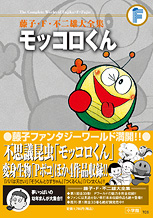

| |

定価1,785円（税込）
A5判／360ページ
好評発売中！
★は初めて単行本に収録される
作品です 。
※収録内容は変更になる
場合があります。

|
＜モッコロくん＞
こんにちはモッコロくん（幼稚園1974年1月号）
いじめっ子にはまけないぞ（幼稚園1974年2月号）
おかしなわらい虫（幼稚園1974年2月号）
★ぴいぷうぽう（幼稚園1974年4月号）
とっきゅうアオムシ号（幼稚園1974年5月号）
アメンボのふしぎ（幼稚園1974年6月号）
見えないみかた（幼稚園1974年7月号）
地面のなき声（幼稚園1974年8月号）
ゾウとたたかえ（幼稚園1974年9月号）
あばれ馬を止めろ（幼稚園1974年10月号）
春風せんぷうき（幼稚園1974年11月号）
タマゴをまもろう（幼稚園1974年12月号）
おもち大すき（幼稚園1975年1月号）
おし入れはゲレンデ（幼稚園1975年2月号）
ケーキにあつまれ（幼稚園1975年3月号）
公園には仲間がいっぱい（小学一年生1974年4月号）
虫と仲よくなろう（小学一年生1974年5月号）
ハイキング（小学一年生1974年6月号）
すてきなあそび場（小学一年生1974年7月号）
へやの中で花火?（小学一年生1974年8月号）
トンボ・ジェット（小学一年生1974年9月号）
がんばれゆうちゃん（小学一年生1974年10月号）
★アリとキリギリス（小学一年生1974年11月号）
★むし歯虫（小学一年生1974年12月号）
★お金虫（小学一年生1975年1月号）
しょっ角であそぼう（小学一年生1975年2月号）
なき虫・おこり虫・わらい虫
（小学一年生1975年3月号）
＜４じげんぼうPポコ＞
★4じげんから来た友だち（幼稚園1975年4月号）
★ようこちゃんのたん生日（幼稚園1975年5月号）
★巣箱は小鳥でいっぱい（幼稚園1975年6月号）
★かみなりが来たよ（幼稚園1975年7月号）
★あばれトンボ（幼稚園1975年8月号）
★あこがれのようち園（幼稚園1975年9月号）
★ライオンなんかこわくないぞ
（幼稚園1975年10月号）
★ちゅうしゃこわい（幼稚園1975年11月号）
★ママがタコあげ?（幼稚園1975年12月号）
★おきゃくさまが来た（幼稚園1976年1月号）
★楽しいまめまき（幼稚園1976年2月号）
★さようなら、Pポコ（幼稚園1976年3月号）
★ぼく、ピーポコ（小学一年生1975年4月号）
★きょうふのおねえちゃん
（小学一年生1975年5月号）
★おせんたくそうどう（小学一年生1975年6月号）
★小鳥の巣をまもれ（小学一年生1975年7月号）
★Pポコのお絵かき（小学一年生1975年8月号）
★白か、黒か!?（小学一年生1975年9月号）
★おねえちゃんのすきな人
（小学一年生1975年10月号）
★デカ夫にしかえし（小学一年生1975年11月号）
★おとしものとまいご（小学一年生1975年12月号）
★お年玉がほしい（小学一年生1976年1月号）
★大きな雪だるま（小学一年生1976年2月号）
|
＜ぞうくんとりすちゃん＞
ボールであそぼう（めばえ1974年5月号）
ぼうしがポチャン（めばえ1974年6月号）
くるくるかざぐるま（めばえ1974年7月号）
きりかぶなんだ?（めばえ1974年8月号）
りすちゃんとんだ！（めばえ1974年9月号）
なかよしぶらんこ（めばえ1974年10月号）
ゆらゆらパラシュート（めばえ1974年11月号）
でんしゃがとおるよ（めばえ1974年12月号）
いまなんじ？（めばえ1975年1月号）
ぞうくんおおきいね（めばえ1975年2月号）
おめんでびっくり（めばえ1975年3月号）
＜つくるくん＞
★かたをたたくきかい
（キンダーブック1974年4月号）
★あんぜん自どう車（キンダーブック1974年5月号）
★チョウの羽（キンダーブック1974年6月号）
★雨をふきとばすぼうし
（キンダーブック1974年7月号）
★おやつが出る時計（キンダーブック1974年8月号）
★ロープウェイ（キンダーブック1974年9月号）
★目ざまし時計（キンダーブック1974年10月号）
★じゃんけん箱（キンダーブック1974年11月号）
★おんぶロボット（キンダーブック1974年12月号）
★ふしぎなしゃぼん玉
（キンダーブック1975年1月号）
★パトカー（キンダーブック1975年2月号）
★ふとんをうかすガス
（キンダーブック1975年3月号）
＜パン太くん＞
★風のひみつ（小学一年生1973年1月号）
★じしゃくのひみつ（小学一年生1973年2月号）
★かげのひみつ（小学一年生1973年3月号）
★春が来た（小学二年生1973年4月号）
＜パパは天さい！＞
タコあげ（月刊てづかマガジンれお1972年1月号）
だめなパパ（月刊てづかマガジンれお1972年2月号）
空気クレヨン
（月刊てづかマガジンれお1972年3月号）
メモビジョン
（月刊てづかマガジンれお1972年4月号）
ロボット・ママ（※）
※雑誌休刊のため未発表、後に1984年刊行藤子不二雄ランド「21エモン」第5巻で初収録
|